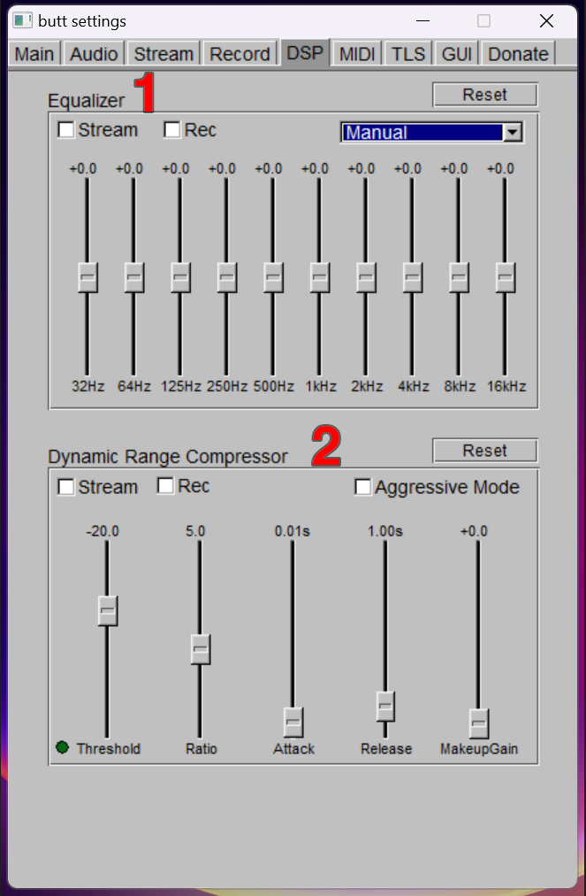

Introduction
Broadcast Using This Tool (BUTT) is the streaming software Utter uses in it's studios to send audio to it's aggregator (Radio.Co).
Step-sy-step
Starting a broadcast
Sending out a broadcast over BUTT is fairly straightforward.

Before you begin a broadcast, it is best practice to double check that BUTT is targeting Utter's Radio.co server. To do this, open the Settings menu 1 and select the Main tab 2.

Near the top of the Main tab, there will be a box labeled Server settings. At the top of this section, there is a server selection dropdown 3 - this should be set to the "Utter" preset.
If no "Utter" preset is avaialable.
You can create a new preset using the server Add button 4.

A popup will open with a list of server types - each with their own respective options. From the list on the left, select Radio.co 5, then click Get staitons 6. You will be prompted to log in to Radio.co - if you haven't already signed up for an account, contact the station manager to do so.
Now that you've confirmed BUTT is targeting Utter's Radio.co server, close the settings window and use the Connect to Server button 7 on the main control panel to begin the broadcast. The broadcast will begin immediately.
Comprehensive
Dashboard
- 1 Conenct to Server
- Establishes a connection to the aggregation platform (Radioco) and begins a broadcast.
- 2 Disconnect from Server
- Stops broadcasting and closes the connection to the aggregation platform.
- 3 Record
-
Records and saves the currently outgoing broadcast locally on the host computer.
The save directory can be designated in the settings menu. - 4 Mixer
- Software mixer used to fade between inputs and apply gain to the audio source, recording, our stream.
- 5 Streaming / Recording
- Switches signal monitor between outgoing stream, and local recording levels.
- 6 Master Gain
- Gain that applies to both the recording and the stream output.
- 7 Log
- Console that displays the connection status and listenership information of the outgoing broadcast.
- 8 Broadcast Status
- Displays uptime and health of current broadcast.
- 9 Settings
- Opens BUTT's settings window.
Input Ouptput
- 1 Channel Mode
- Toggles between stereo and mono broadcasting.
- 2 Samplerate
-
Sets the sampling frequency for broadcasts and strems.
(MUST match samplerate of audio interface (desk) and broadcast aggregator server). - 3 Device Identification
- Finds and lists available audio input and output devices connected to the host computer.
- 4 Primary and Secondary Audo Devices
-
Sets the audio input used for the primary and secondary audio feeds (see mixer).
At least one input must be set for a broadcast to work. Left and Right dropdowns are used to assign channels from each device to left and right broadcasting outputs. For mono devices, left and right can both be set to channel 1. - 5 Codec
-
The format in which audio is streamed to the aggregator and recorded locally.
Advanced codec properties can be accessed through the cog icon on the right. - 6 Bitrate
-
The rate at which information is streamed to the aggregator and recorded locally.
(Higher is better, but requires a faster internet connection for streaming. Recordings can, and should, be set as high as possible.) - 7 Signal Detection Levels
- The volume threshold beyond which audio will be broadcast - essentially a noise gate.
Signal processing
Signal processing will already be applied through the mixing desk - there is no need to use the tools built into BUTT.
- 1 Equaliser
- Basic graphic EQ - sets gain for 10 predetermined frequency bands for the braodcast or recording output.
- 2 Compressor
- Basic compressor that can be applied to the broadcast or recording output.